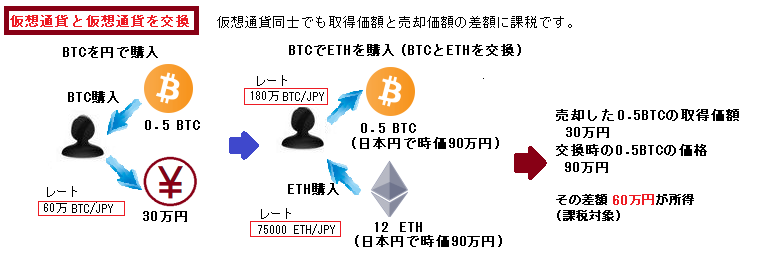

仮想通貨の所得の計算例を図にしました。
色々と勘違いしている人がいたことと自分の理解のために作成しました。
嘘があるかもしれません、その場合はごめんなさい。

※図の「課税対象」は「支払う税金」ではありません。所得に応じた税率（5％～45％）を掛けて算出します。 税率や所得による条件は仮想通貨に限らない部分なので、そのような計算は国税庁の「確定申告書等作成コーナー」で作成すれば自動で計算してくれます。
損失は利益から減額できないから理不尽な税制だ、と言う人がいましたが、それは勘違いです。
5倍、10倍、50倍、と価値が増えて、その多くを他の仮想通貨に交換してから2018年を迎えた方は要注意です。 評価額が高ければ「約半額は税金」の意識です（マジで！）。早く円に替えて税金分を引き出しましょう。
複数の取引所を使ったり、何百回も取引していると、とても手計算なんてできませんね。
仮想通貨に強い税理士さんにお願いするか、誰かが作成している優秀なExcelをWebで探しましょう。

あとXPにはrain機能もありますね。マイニングと同じ考えなんだと思いますが、、どうでしょうかね。
詳しくは国税庁の資料を参照ください。→ 仮想通貨に関する所得の計算方法等について PDF
作成者:はやゆう
modified: 2018/01/06